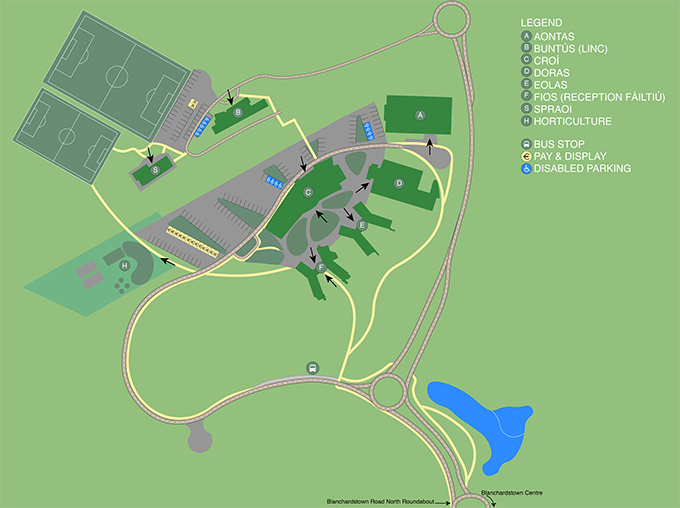

Blanchardstown Campus Location
TU Dublin - Blanchardstown Campus is located in Blanchardstown, Dublin 15, about 15km west of Dublin City Centre. We are about 20km from Maynooth Co. Kildare, 15km from Ashbourne Co. Meath and about 35km from Bray Co. Wicklow. Click the image below to view our location on TU Dublin website:
